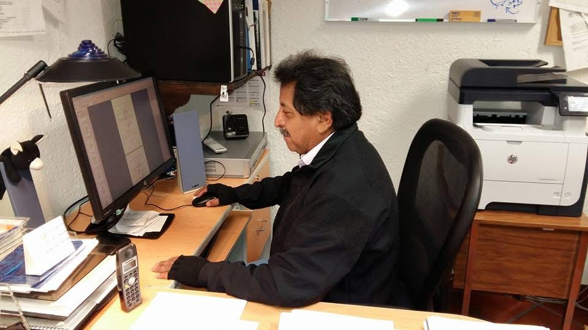

José Ricardo Martínez Bravo

Jefe del Departamento de Biblioteca del Centro de Investigación en Matemáticas (CIMAT), en Guanajuato, México.
Licenciado en Biblioteconomía (L.B.) con más de cuarenta años de experiencia en bibliotecas universitarias, de enseñanza y de investigación. Desde marzo de 1997 dirige el Departamento de Biblioteca del CIMAT, un servicio de información orientado a las áreas de Matemáticas, Estadística y Ciencias de la Computación.
Su trabajo consiste en asegurar que el personal científico del centro localice, organice y aproveche los recursos que necesita: desde el catálogo y las bases de datos hasta el préstamo, los archivos y el acompañamiento en el uso de las herramientas digitales. Además ha representado al centro en redes de cooperación bibliotecaria, como el Consejo Asesor de Recursos de Información (CARI) de CONACyT y el Grupo de Centros de Información y Bibliotecas de Guanajuato.
En este sitio puede consultar su trayectoria profesional, el detalle de su trabajo en la biblioteca, sus proyectos y publicaciones, y sus datos de contacto.